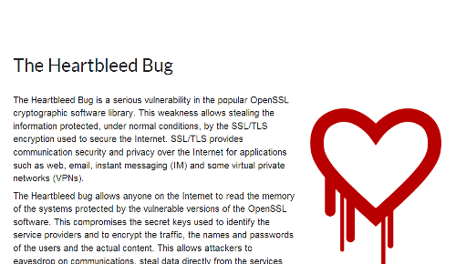

也紀念我們永遠的朋友 李士傑先生（Shih-Chieh Ilya Li）。
CII 成立ーIntel、Google、Microsoft、Facebook、Dell、IBM 破天荒共同合作出資防堵自由開放源碼領域的安全漏洞
自由開源軟體專案的資訊安全性 (Information Security)，在被採納為商業方案時，一直有著進退兩難的困局 (dilemma)。有論者認為，程式碼的開源與披露，將讓資訊安全防護，處於易受攻擊的劣勢；但亦有支持的論調，認為程式碼的開源，將有助於透過眾人的協力來共同查察程式的臭蟲 (bug) 及漏洞，長遠來看，此一開發模式反會有助於提高程式碼的品質，從而降低資訊安全失守的風險 (With enough eyeballs, all bugs are shallow)。而近期，使用率極高及開發歷史亦長的知名自由開源加密軟體程式專案 OpenSSL，被發現內置長期的資安漏洞ーHeartbleed，更讓這個長久以來就爭戰不休的二元觀點，再次被拿出來熱烈討論！

▲ 圖1：對 OpenSSL 安全漏洞進行警示與披露的專題網站截圖：https://heartbleed.com/
然而，以 Heartbleed 事件為契機，Intel、Google、Microsoft、Facebook，Dell 與 IBM 等重要的跨國性資訊科技大廠，現已決定合作成立一個協力組織，以合力營建自由開源軟體領域的資訊安全防護牆，並防堵另一次大規模安全性漏洞問題的發生。這個新成立的組織叫做 Core Infrastructure Initiative (CII)，將在設立之後納入 Linux Foundation 的旗下，並由協力廠商共同出資，來提供奧援給帶有關鍵核心計算功能的自由開放源碼專案，或其他此一領域重要的軟體基礎工程。
Linux foundation 表示：CII 正是因應 OpenSSL Heartbleed 危機而生，是一個規模高達數百萬美元的專案，CII 專案的管理成員除了 Linux Foundation 外，還包括由後台各科技大廠所組成的指導小組，與重要的自由開放源碼開發者及其他業界的專門人士，此一管理成員會定期共同討論與決定，要資助哪個自由開放源碼軟體專案，來提升其資訊安全防護的密度。此外，CII 還會提供獎學金給為該專案全職工作的自由開放源碼開發者；或是視情況金援安全稽核、計算與測試基礎工程、協作或就相關事務開會協調等等事項的支出。Linux Foundation 表示，資金挹注對象會聚焦於現有的開源專案或開源社群身上，而非另起爐灶開設新型專案，至於對這些開發者的資助，也不會試圖改變其既有的工作模式，或對專案結構進行置肘，基金會這邊只是統整各方資源來支援有需要的開源專案協作工作。
當前 CII 的成員有 Google、Facebook、IBM、Intel、Dell、Cisco、Amazon Web Services、Microsoft、Qualcomm、Rackspace、VMWare、Netapp，以及 Fujitsu 等科技公司的參與。這些成員都認知到關鍵的自由開放源碼軟體專案，對於自家產品或服務以及整個現代社會運作的重要性，透過 Heartbleed 事件，這些科技大廠確實體會到，僅對自家所使用的重要開源專案，進行漏洞修補或安全性升級是不夠的，現今在資通訊產業，不論是從生產面、建置面，或是服務面來看，自由開源軟體專案的運用與佈局已是不可逆轉的趨勢，故若是個別環結的運作產生資安缺漏，此層面並非個別廠商能夠不受影響或獨善其身的，故而整體維護重要自由開源軟體專案的發展與穩定性，方為治本之道。
從觀察面來說，Heartbleed 的資安漏洞，確實引起近日整個資訊社會的恐慌，與對自由開源軟體專案資訊安全的不確定感，但同時也讓大眾了解到，自由開放源碼軟體與自身息息相關的程度，以及 OpenSSL 或 Linux 等等開源專案與系統在當代的重要性，此一事件更進而促成了 CII 的成立，破天荒讓原本商業立場不同的跨國性資通訊大廠們，都可以在共利的期待下捐棄成見攜手合作，其實也可以說是塞翁失馬、焉知非福的有趣發展！
參考網址：
- Google、Microsoft、Intel 及 Facebook 合力杜絕 Heartbleed 類似事件的再次發生
- Linux Foundation 將 Microsoft、Google 拉進防範 Heartbleed 事件的共同陣線
- Core Infrastructure Initiative
- HeartBleed 效應：Google、FB 等 13 家科技大廠聯組開放源碼安全計畫
- 分支 LibreSSL 創造者宣稱，OpenSSL 程式碼沒法修了
Special


Address：No.128, Sec.2, Academia Rd., Institute of Information Science, Academia Sinica, Nangang District, Taipei City 11529, Taiwan (R.O.C).
Privacy Policy. Terms-of-use